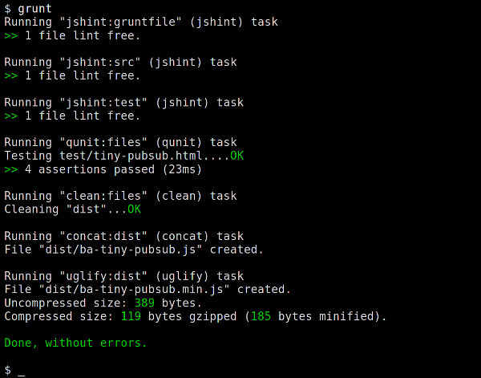

Universidad Nacional Experimental Del Táchira
Decanato De Docencia
Dpto. Ingeniería Informática
Desarrollo
Web
Conocimientos previos
- Funcionamiento de la WWW
- Componentes de una página o aplicación web.
- Conocimientos sobre el desarrollo de aplicaciones web.
- Nociones sobre diseño de interfaces de usuario.
- Conocimientos básicos de base de datos.
Objetivo de la clase
- Conocer las últimas tendencias de desarrollo web.
- Selección de las mejoras herramientas al iniciar un proyecto web.
- Conocer las técnicas para la optimización de sitios web.
- Conocer los frameworks de desarrollo web mas utilizados.
¿Cómo empezar?
Desde 0
- Consiste en comenzar el desarrollo de la aplicación desde la creación de cada archivo, librerías, metolodogías propias.
- Descarga e instalación manual de cada componente.
Base inicial
- Comenzar a partir de una base desarrollada por un tercero, utilizar la organización y metodología usada por este tercero.
- Generalmente se utilizan herramientas de generación de código o descarga de proyectos de código abierto.
Empezar desde 0
Ventajas
- Mayor control de todos los aspectos del proyecto.
- Fácil compresión inicial de la estructura del proyecto.
- Libre selección de los componentes del proyecto.
Desventajas
- Requiere mayor tiempo para instalar y entrelazar los componentes iniciales.
- La seguridad y calidad depende de los conocimientos del programador.
Uso de una
base inicial
Ventajas
- Reducción de tiempo para generar la base inicial del proyecto.
- Generalmente se utilizan estándares, código eficiente y moderno.
- Facilita el mantenimiento futuro al depender de terceros.
Uso de una
base inicial
Desventajas
- Dependecia de programadores externos para el mantenimiento de partes de la aplicación de terceros.
- El flujo de trabajo se debe adaptar a las tecnologías que utiliza la base inicial.
Últimas tendencias en el desarrollo web
HTML5 Boilerplate

- Plantilla de HTML5 que incluye todo lo que debería tener un sitio web.
- Diseñada para funcionar en todos los navegadores.
- Compatible con dispositivos móviles.
- Permite armar una plantilla personalizada eligiendo las tecnologías a usar.
- Elaborada por programadores reconocidos en el área.
- De código abierto.
Initializr
-
Permite crear una plantilla HTML5 boilerplate en pocos segundos.
- Permite decidir las plataformas a brindar soporte y seleccionar los componentes a incluir.
- El generador incluye las últimas versiones de distintos proyectos que facilitan el desarrollo web.
Yeoman
- Es un generador de código, permite generar una aplicación base sus componentes estan creados con las mejores prácticas de desarrollo en pocos segundos.
- Se conecta directamente a los repositorios de Github, permitiendo tener las versiones actuales, desarrollo, entre otros.
- Permite instalar herramientas que permiten agregar partes y componentes a la aplicación automáticamente, como controladores, liberías, clases, vistas, etc.
Yeoman
Está compuesto por 3 herramientas:
- yo: genera código, aplicaciones y configuraciones para las demás herramientas de Yeoman.
- grunt/gulp: es el sistema de construcción, permite construir, previsualizar y probar el proyecto.
- bower/npm: utilizado para manejar las dependencias de software.

Yeoman
Ejemplo de uso de yo
-
Se puede usar mediante la línea de comandos:
yo angular MiAplicacionAngular -
Ejemplo de creación de un controlador en Angular:
yo angular:controller miControlador
- Se puede utilizar mediante un asistente.
Grunt/Gulp
- Permiten automatizar tareas repetitivas como: optimización de código, recarga de la página ante cambios, compilación, pruebas unitarias, entre otros. Para ahorrar tiempo de desarrollo.
- Se pueden importar tareas automatizadas desde NPM (Node Package Manager) o programar tareas propias. Éstas se pueden concatenar para realizar una tarea tras otra.
- Se pueden programar para evitar intervención humana sino a que se ejecuten cada vez que ocurran ciertos eventos: como al guardar un archivo, detectar ciertos cambios en el código, entre otros.
Grunt/Gulp
Ejemplo de ejecución
Bower
- Las aplicaciones suelen estar compuestas de: frameworks, bibliotecas, herramientas, entre otros.
- Bower permite manejar estas dependencias, al descargar, instalar y actualizar cada una de ellas automáticamente.
Bower
Ejemplo de bower.json
{
"name": "my-project",
"version": "1.0.0",
"main": "path/to/main.css",
"ignore": [
".jshintrc",
"**/*.txt"
],
"dependencies": {
"name": "version",
"name": "carpeta",
"name": "paquete"
},
"devDependencies": {
"frameworkPruebas": "version"
}
}
Flujo de trabajo
con Yeoman
- Generar una aplicación o plantilla base con yo.
- Instalar/Actualizar las dependencias con grunt.
- Empezar a trabajar y utilizar grunt para automatizar procesos.